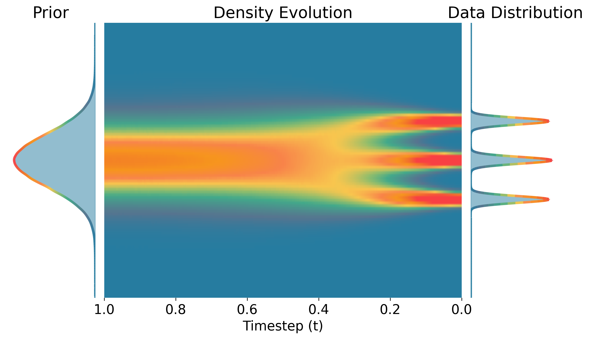
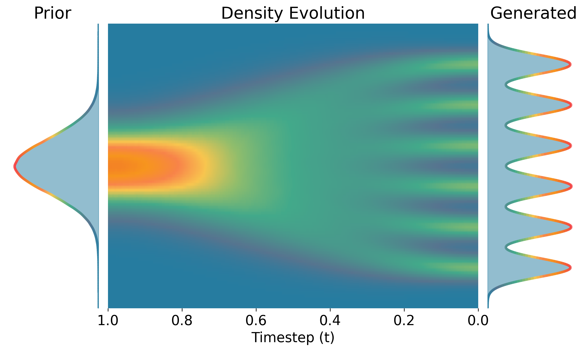
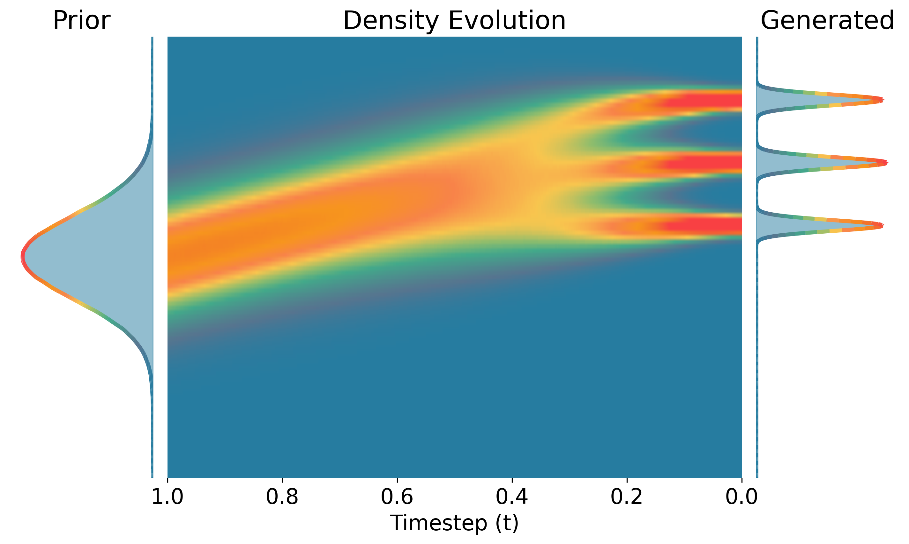
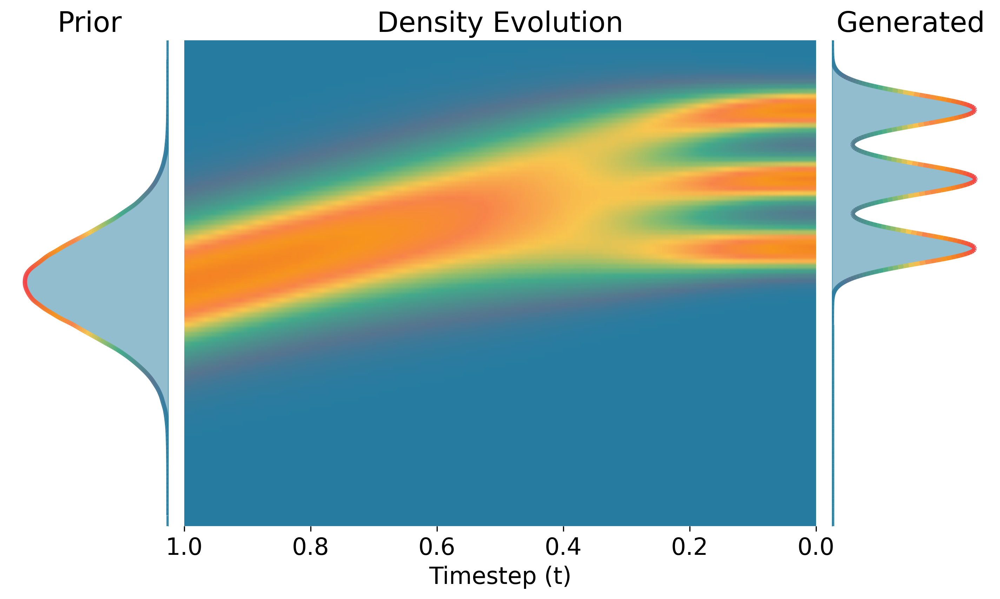

Diffusion and Flow Models
Diffusion and flow models both fall under the family of stochastic interpolant1, which converts samples from data distribution $\mathbf{x}_0 \sim p_0(\mathbf{x})$ to Gaussian noise $\boldsymbol{\epsilon} \sim \mathcal{N}(0, \mathbf{I})$. The interpolant process can be defined as:
Different noise schedules $\alpha_t, \sigma_t$ correspond to different formulations of stochastic interpolants. For example, for flow matching models it is common to set $\alpha_t=1-t, \ \sigma_t=t$, while for variance-preserving diffusion models they are defined such that $\alpha_t^2 + \sigma_t^2 = 1$.
Temperature Scaling
The process of trading off sample likelihood and diversity at inference is commonly referred to as temperature sampling – a higher temperature leads to diverse samples, and a lower temperature leads to more likely ones. In the following, we explain two common approaches to steer the inference of diffusion or flow models, and discuss their limitations.
Classifier Free Guidance
Classifier-Free Guidance (CFG) is a widely-used technique for controlling the trade-off between sample quality and diversity in both diffusion models and flow matching. The core idea is to interpolate between an unconditional model prediction and a conditional model prediction during sampling.
For any score-based or flow-based generative model, CFG modifies the predicted direction (whether it's a score, velocity, or flow field) as:
where $\mathbf{v}_t(\mathbf{x}_t | \mathbf{c})$ is the conditional prediction given context $\mathbf{c}$, $\mathbf{v}_t(\mathbf{x}_t)$ is the unconditional prediction, and $w$ is the guidance weight. When $w = 0$, we recover unconditional sampling; when $w > 0$, we push samples toward the conditional distribution, often improving quality at the cost of diversity.
While this allows one to trade off likelihood and diversity by controlling the effect of the conditioning on the drawn samples, it is fundamentally different from temperature scaling, which we show in the next section. Moreover, CFG cannot be applied to unconditional models and even for conditional ones, requires training with condition dropout.
Constant Noise Scaling
Constant Noise Scaling (CNS) is perhaps the closest existing approach to our method in terms of being efficient and training-free. CNS scales the stochastic noise at each reverse sampling step in DDPM by a constant factor. From an SDE perspective, CNS solves the following reverse-time SDE:
where compared to the regular reverse-time SDE, the noise term is scaled by the constant factor $\frac{1}{\sqrt{k}}$. Intuitively, a larger $k$ reduces the noise injected at each step, leading to samples that are more likely under the model distribution, while a smaller $k$ increases the noise, promoting diversity. While CNS is widely used to control sample variance and improve quality, it only applies to stochastic samplers and a fixed scaling factor over sampling horizon often leads to impaired distribution and mode dropping.
Illustrative Examples
To better understand the limitations of prior art and the benefits of our proposed Temporal Score Rescaling (TSR), we consider a simple isotropic Gaussian mixture as a data distribution, where top 3 modes are class 0 and bottom 3 modes are class 1. We use the analytical score function of the GMM for all methods, for both conditional and unconditional generation. Intuitively, we would want the sampled distribution to preserve the global structure of the data distribution, while adjusting the "sharpness" of each mode to control sample likelihood and diversity.
Unconditional Generation

DDPM+TSR (Ours)

DDPM
Figure 1. Density evolution during the sampling process from noise (t=1.0) to data (t=0.0). The prior distribution is shown on the left, the density evolution in the center, and the final generated distribution on the right. Our TSR method shows improved control over the sampling process compared to baseline methods.
Conditional Generation

DDPM+TSR (Ours)

DDPM
Figure 2. Density evolution during the sampling process from noise (t=1.0) to data (t=0.0). The prior distribution is shown on the left, the density evolution in the center, and the final generated distribution on the right. Our TSR method shows improved control over the sampling process compared to baseline methods.